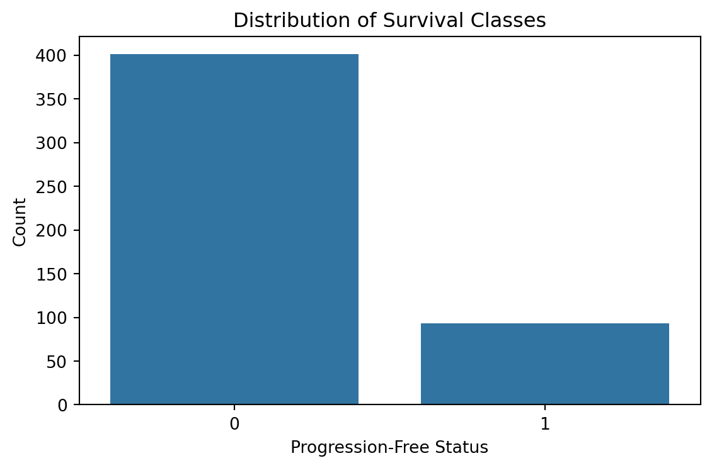
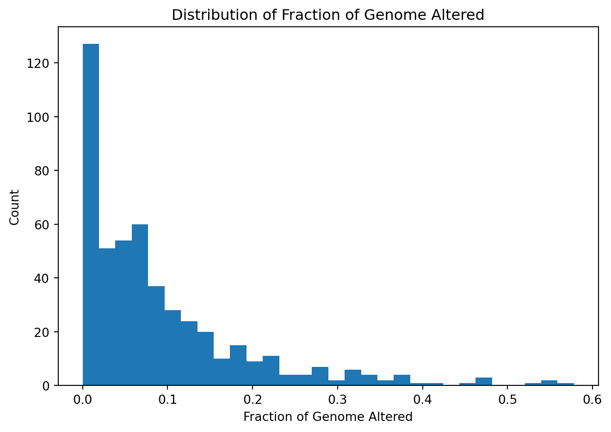
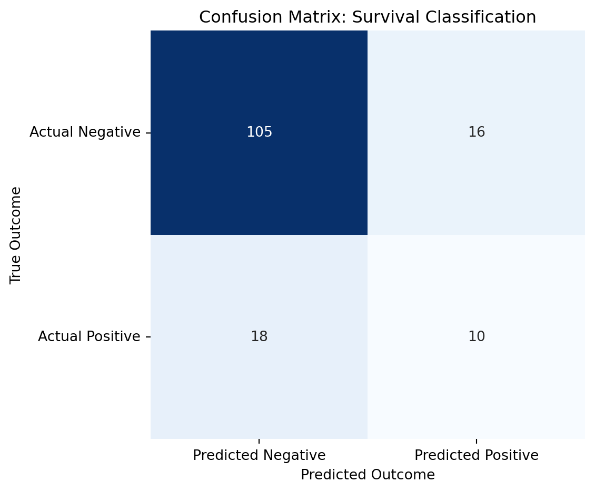
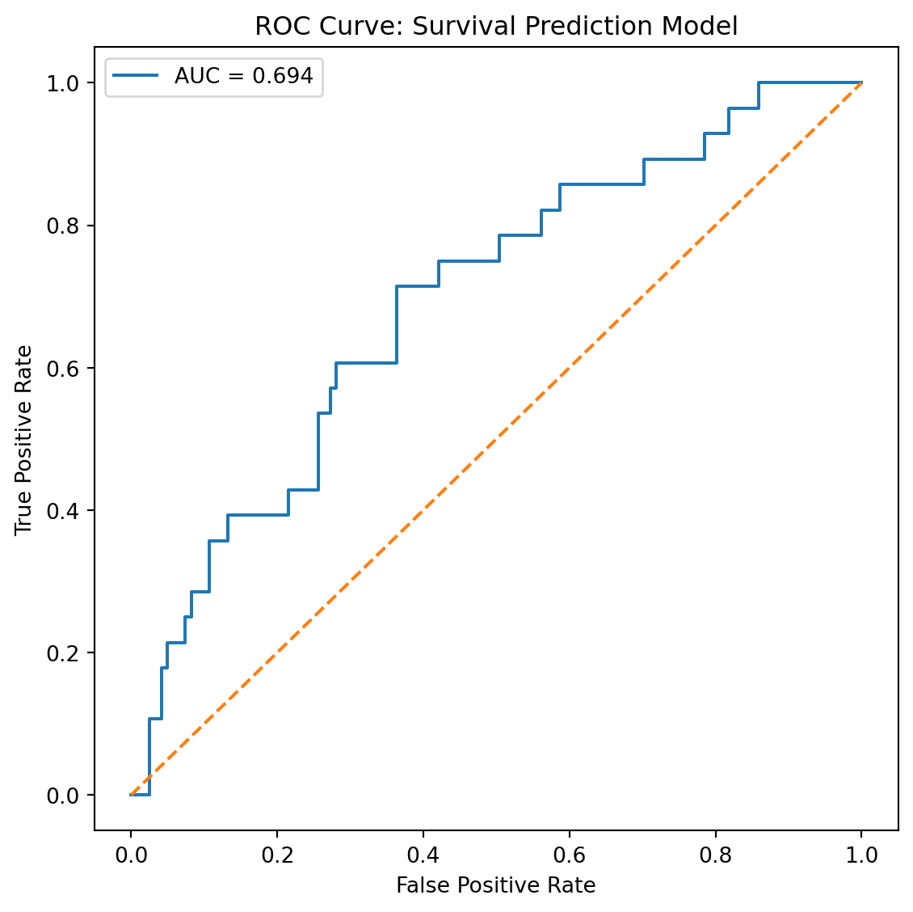
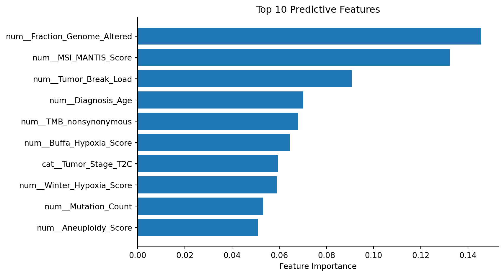
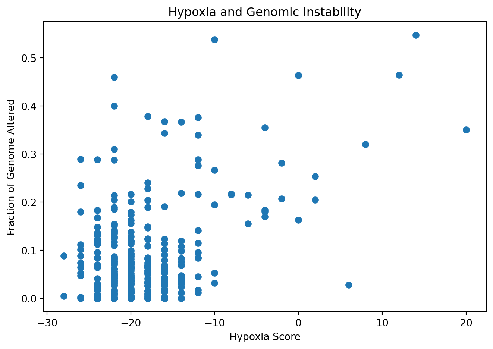
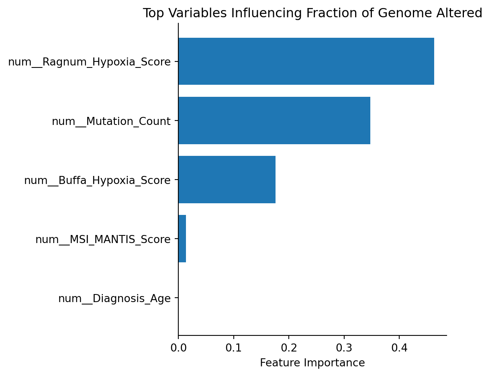

import pandas as pd
import numpy as np
import matplotlib.pyplot as plt
import seaborn as sns
from sklearn.model_selection import train_test_split
from sklearn.pipeline import Pipeline
from sklearn.compose import ColumnTransformer
from sklearn.impute import SimpleImputer
from sklearn.preprocessing import OneHotEncoder
from sklearn.ensemble import RandomForestClassifier
from sklearn.tree import DecisionTreeRegressor
from sklearn.model_selection import KFold, GridSearchCV
from sklearn.metrics import (
classification_report,
confusion_matrix,
roc_curve,
roc_auc_score
)Prostate Cancer Survival Prediction and Genomic Alteration Analysis
Introduction
This analysis investigates whether genomic and clinical variables can predict prostate cancer progression free survival status using machine learning classification models. Additional regression analysis explores which biological variables may influence Fraction of Genome Altered, a measure of genomic instability commonly associated with tumor progression.
The analysis includes:
- Data cleaning and preprocessing
- Classification modeling for survival prediction
- Feature importance analysis
- ROC curve evaluation
- Confusion matrix visualization
- Regression analysis for genomic instability
Import Packages
Load Data
prostate_cancer = pd.read_csv(
"data/prad_tcga_pan_can_atlas_2018_clinical_data.tsv",
sep='\t'
)Data Cleaning
prostate_cancer.columns = prostate_cancer.columns.str.replace(' ', '_')
prostate_cancer.columns = prostate_cancer.columns.str.replace(r'[\(\)]', '', regex=True)non_predictor = [
'Study_ID', 'Patient_ID', 'Sample_ID', 'Patient_Weight', 'Cancer_Type', 'Cancer_Type_Detailed',
'Sex', 'Number_of_Samples_Per_Patient', 'American_Joint_Committee_on_Cancer_Metastasis_Stage_Code',
'Primary_Lymph_Node_Presentation_Assessment', 'Neoplasm_Disease_Stage_American_Joint_Committee_on_Cancer_Code',
'American_Joint_Committee_on_Cancer_Publication_Version_Type',
'Neoplasm_Disease_Stage_American_Joint_Committee_on_Cancer_Code', 'TCGA_PanCanAtlas_Cancer_Type_Acronym',
'Last_Alive_Less_Initial_Pathologic_Diagnosis_Date_Calculated_Day_Value', 'Disease-specific_Survival_status',
'Ethnicity_Category', 'Neoplasm_Histologic_Grade', 'Neoadjuvant_Therapy_Type_Administered_Prior_To_Resection_Text', 'ICD-10_Classification', 'International_Classification_of_Diseases_for_Oncology,_Third_Edition_ICD-O-3_Histology_Code',
'International_Classification_of_Diseases_for_Oncology,_Third_Edition_ICD-O-3_Site_Code',
'Informed_consent_verified', 'Oncotree_Code', 'Other_Patient_ID',
'American_Joint_Committee_on_Cancer_Metastasis_Stage_Code', 'Primary_Lymph_Node_Presentation_Assessment',
'Race_Category', 'Number_of_Samples_Per_Patient', 'Sample_Type',
'Somatic_Status', 'Subtype', 'Tissue_Source_Site', 'Tissue_Prospective_Collection_Indicator',
'Tissue_Retrospective_Collection_Indicator', 'Tissue_Source_Site_Code', 'Tumor_Disease_Anatomic_Site','Last_Communication_Contact_from_Initial_Pathologic_Diagnosis_Date', 'Birth_from_Initial_Pathologic_Diagnosis_Date',
'Form_completion_date'
]
prostate_cancer = prostate_cancer.drop(columns=non_predictor)prostate_cancer = prostate_cancer.rename(columns={
'Neoplasm_Disease_Lymph_Node_Stage_American_Joint_Committee_on_Cancer_Code': 'Lymph_Node_Stage',
'American_Joint_Committee_on_Cancer_Tumor_Stage_Code': 'Tumor_Stage'
})Target Variable Selection
other_target = [
'Disease_Free_Months',
'Disease_Free_Status',
'Progress_Free_Survival_Months',
'Months_of_disease-specific_survival',
'Overall_Survival_Months',
'Overall_Survival_Status',
'Person_Neoplasm_Cancer_Status',
'New_Neoplasm_Event_Post_Initial_Therapy_Indicator',
]
prostate_class = prostate_cancer.drop(columns=other_target)prostate_class['Progression_Free_Status'] = (prostate_class['Progression_Free_Status'].astype(str).str[0].astype(int))Exploratory Analysis
Distribution of Progression-Free Survival Status
plt.figure(figsize=(6,4))
sns.countplot(x=prostate_class['Progression_Free_Status'])
plt.xlabel('Progression-Free Status')
plt.ylabel('Count')
plt.title('Distribution of Survival Classes')
plt.tight_layout()
plt.show()
Distribution of Fraction of Genome Altered
plt.figure(figsize=(7,5))
plt.hist(prostate_cancer['Fraction_Genome_Altered'].dropna(), bins=30)
plt.xlabel('Fraction of Genome Altered')
plt.ylabel('Count')
plt.title('Distribution of Fraction of Genome Altered')
plt.tight_layout()
plt.show()
Train-Test Split
X = prostate_class.drop(columns='Progression_Free_Status')
y = prostate_class['Progression_Free_Status']
X_train, X_test, y_train, y_test = train_test_split(
X,
y,
train_size=0.7,
random_state=4025,
stratify=y
)Preprocessing
numeric_cols = ['Diagnosis_Age', 'Aneuploidy_Score', 'Buffa_Hypoxia_Score', 'Fraction_Genome_Altered', 'MSI_MANTIS_Score', 'MSIsensor_Score', 'Mutation_Count', 'Ragnum_Hypoxia_Score', 'Tumor_Break_Load', 'TMB_nonsynonymous', 'Winter_Hypoxia_Score']
categorical_cols = ['Genetic_Ancestry_Label', 'In_PanCan_Pathway_Analysis', 'Lymph_Node_Stage', 'Tumor_Stage', 'Prior_Diagnosis', 'Radiation_Therapy', 'Tumor_Type']numeric_transformer = Pipeline([
('imputer', SimpleImputer(strategy='median'))
])
categorical_transformer = Pipeline([
('imputer', SimpleImputer(strategy='most_frequent')),
('onehot', OneHotEncoder(handle_unknown='ignore'))
])preprocessor = ColumnTransformer([
('num', numeric_transformer, numeric_cols),
('cat', categorical_transformer, categorical_cols)
])Classification Model
rf_classifier = RandomForestClassifier(
n_estimators=100,
max_depth=6,
class_weight='balanced',
random_state=4025
)
rf_pipeline = Pipeline([
('preprocessor', preprocessor),
('rf', rf_classifier)
])
rf_pipeline.fit(X_train, y_train)Pipeline(steps=[('preprocessor',
ColumnTransformer(transformers=[('num',
Pipeline(steps=[('imputer',
SimpleImputer(strategy='median'))]),
['Diagnosis_Age',
'Aneuploidy_Score',
'Buffa_Hypoxia_Score',
'Fraction_Genome_Altered',
'MSI_MANTIS_Score',
'MSIsensor_Score',
'Mutation_Count',
'Ragnum_Hypoxia_Score',
'Tumor_Break_Load',
'TMB_nonsynonymous',
'Winter_Hypoxia_...
Pipeline(steps=[('imputer',
SimpleImputer(strategy='most_frequent')),
('onehot',
OneHotEncoder(handle_unknown='ignore'))]),
['Genetic_Ancestry_Label',
'In_PanCan_Pathway_Analysis',
'Lymph_Node_Stage',
'Tumor_Stage',
'Prior_Diagnosis',
'Radiation_Therapy',
'Tumor_Type'])])),
('rf',
RandomForestClassifier(class_weight='balanced', max_depth=6,
random_state=4025))])In a Jupyter environment, please rerun this cell to show the HTML representation or trust the notebook. On GitHub, the HTML representation is unable to render, please try loading this page with nbviewer.org.
Parameters
Parameters
['Diagnosis_Age', 'Aneuploidy_Score', 'Buffa_Hypoxia_Score', 'Fraction_Genome_Altered', 'MSI_MANTIS_Score', 'MSIsensor_Score', 'Mutation_Count', 'Ragnum_Hypoxia_Score', 'Tumor_Break_Load', 'TMB_nonsynonymous', 'Winter_Hypoxia_Score']
Parameters
['Genetic_Ancestry_Label', 'In_PanCan_Pathway_Analysis', 'Lymph_Node_Stage', 'Tumor_Stage', 'Prior_Diagnosis', 'Radiation_Therapy', 'Tumor_Type']
Parameters
Parameters
Parameters
Model Evaluation
Classification Report
y_pred = rf_pipeline.predict(X_test)
print(classification_report(y_test, y_pred)) precision recall f1-score support
0 0.85 0.87 0.86 121
1 0.38 0.36 0.37 28
accuracy 0.77 149
macro avg 0.62 0.61 0.62 149
weighted avg 0.77 0.77 0.77 149
Confusion Matrix
cm = confusion_matrix(y_test, y_pred)
plt.figure(figsize=(6,5))
sns.heatmap(
cm,
annot=True,
fmt='d',
cmap='Blues',
cbar=False
)
plt.xticks([0.5, 1.5], ['Predicted Negative', 'Predicted Positive'])
plt.yticks([0.5, 1.5], ['Actual Negative', 'Actual Positive'], rotation=0)
plt.xlabel('Predicted Outcome')
plt.ylabel('True Outcome')
plt.title('Confusion Matrix: Survival Classification')
plt.tight_layout()
plt.show()
ROC Curve
y_probs = rf_pipeline.predict_proba(X_test)[:, 1]
fpr, tpr, thresholds = roc_curve(y_test, y_probs)
auc_score = roc_auc_score(y_test, y_probs)
plt.figure(figsize=(6,6))
plt.plot(fpr, tpr, label=f'AUC = {auc_score:.3f}')
plt.plot([0, 1], [0, 1], linestyle='--')
plt.xlabel('False Positive Rate')
plt.ylabel('True Positive Rate')
plt.title('ROC Curve: Survival Prediction Model')
plt.legend()
plt.tight_layout()
plt.show()
Feature Importance Analysis
importances = rf_pipeline.named_steps['rf'].feature_importances_
feature_names = rf_pipeline.named_steps['preprocessor'].get_feature_names_out()
rf_importance_df = pd.Series(
importances,
index=feature_names
).sort_values(ascending=False)
rf_importance_df.head(10)num__Fraction_Genome_Altered 0.145667
num__MSI_MANTIS_Score 0.132318
num__Tumor_Break_Load 0.090711
num__Diagnosis_Age 0.070166
num__TMB_nonsynonymous 0.068015
num__Buffa_Hypoxia_Score 0.064408
cat__Tumor_Stage_T2C 0.059354
num__Winter_Hypoxia_Score 0.059020
num__Mutation_Count 0.053174
num__Aneuploidy_Score 0.050834
dtype: float64Top Predictive Variables
top_features = rf_importance_df.head(10)
fig, ax = plt.subplots(figsize=(9,5))
ax.barh(
top_features.index[::-1],
top_features.values[::-1]
)
ax.set_xlabel('Feature Importance')
ax.set_title('Top 10 Predictive Features')
ax.spines['top'].set_visible(False)
ax.spines['right'].set_visible(False)
plt.tight_layout()
plt.show()
Regression Analysis: Fraction of Genome Altered
plt.figure(figsize=(7,5))
plt.scatter(
prostate_cancer['Ragnum_Hypoxia_Score'],
prostate_cancer['Fraction_Genome_Altered']
)
plt.xlabel('Hypoxia Score')
plt.ylabel('Fraction of Genome Altered')
plt.title('Hypoxia and Genomic Instability')
plt.tight_layout()
plt.show()
prostate_reg = prostate_class.dropna(subset=['Fraction_Genome_Altered'])
X_expanded = prostate_reg[[
'Ragnum_Hypoxia_Score',
'Buffa_Hypoxia_Score',
'MSI_MANTIS_Score',
'Mutation_Count',
'Diagnosis_Age'
]]
num_vars = [
'Ragnum_Hypoxia_Score',
'Buffa_Hypoxia_Score',
'MSI_MANTIS_Score',
'Mutation_Count',
'Diagnosis_Age'
]
y = prostate_reg['Fraction_Genome_Altered']
X_train, X_test, y_train, y_test = train_test_split(
X_expanded, y,
train_size=0.7,
random_state=4025
)
numeric_transformer = Pipeline([
('imputer', SimpleImputer(strategy='median'))
])
preprocessor = ColumnTransformer([
('num', numeric_transformer, num_vars)
])
reg_tree_pipe = Pipeline([
('preprocessor', preprocessor),
('tree', DecisionTreeRegressor(random_state=4025))
])
reg_tree_pipe.fit(X_train, y_train)
print(f"Train R^2: {reg_tree_pipe.score(X_train, y_train):.3f}")
print(f"Test R^2: {reg_tree_pipe.score(X_test, y_test):.3f}")Train R^2: 1.000
Test R^2: -0.310cv = KFold(n_splits=10, shuffle=True, random_state=4025)
param_grid = {
'tree__max_depth': [3, 5, 10, None],
'tree__min_samples_split': [2, 5, 10],
'tree__min_samples_leaf': [1, 2, 4]
}
tree_grid = GridSearchCV(
estimator=reg_tree_pipe,
param_grid=param_grid,
cv=cv,
scoring='r2'
)
tree_grid.fit(X_train, y_train)GridSearchCV(cv=KFold(n_splits=10, random_state=4025, shuffle=True),
estimator=Pipeline(steps=[('preprocessor',
ColumnTransformer(transformers=[('num',
Pipeline(steps=[('imputer',
SimpleImputer(strategy='median'))]),
['Ragnum_Hypoxia_Score',
'Buffa_Hypoxia_Score',
'MSI_MANTIS_Score',
'Mutation_Count',
'Diagnosis_Age'])])),
('tree',
DecisionTreeRegressor(random_state=4025))]),
param_grid={'tree__max_depth': [3, 5, 10, None],
'tree__min_samples_leaf': [1, 2, 4],
'tree__min_samples_split': [2, 5, 10]},
scoring='r2')In a Jupyter environment, please rerun this cell to show the HTML representation or trust the notebook. On GitHub, the HTML representation is unable to render, please try loading this page with nbviewer.org.
Parameters
Parameters
['Ragnum_Hypoxia_Score', 'Buffa_Hypoxia_Score', 'MSI_MANTIS_Score', 'Mutation_Count', 'Diagnosis_Age']
Parameters
Parameters
print("Best Parameters:")
print(tree_grid.best_params_)
print(f"\nBest Cross-Validation R²: {tree_grid.best_score_:.3f}")
best_tree = tree_grid.best_estimator_Best Parameters:
{'tree__max_depth': 3, 'tree__min_samples_leaf': 4, 'tree__min_samples_split': 10}
Best Cross-Validation R²: 0.116importances = best_tree.named_steps[
'tree'
].feature_importances_
feature_names = best_tree.named_steps[
'preprocessor'
].get_feature_names_out()
rf_reg_importance_df = pd.Series(
importances,
index=feature_names
).sort_values(ascending=False)
print(rf_reg_importance_df.head(5))num__Ragnum_Hypoxia_Score 0.462876
num__Mutation_Count 0.347508
num__Buffa_Hypoxia_Score 0.175907
num__MSI_MANTIS_Score 0.013710
num__Diagnosis_Age 0.000000
dtype: float64top_features = rf_reg_importance_df.head(5)
fig, ax = plt.subplots(figsize=(6,5))
ax.barh(
top_features.index[::-1],
top_features.values[::-1]
)
ax.set_xlabel('Feature Importance')
ax.set_title(
'Top Variables Influencing Fraction of Genome Altered'
)
ax.spines['top'].set_visible(False)
ax.spines['right'].set_visible(False)
plt.tight_layout()
plt.show()
Discussion
This analysis explored whether genomic and clinical variables could predict prostate cancer progression-free survival status using machine learning classification models. A random forest classifier was trained using processed clinical and genomic variables following data cleaning and preprocessing.
The classification model demonstrated predictive capability for survival outcomes, and ROC curve analysis provided additional evaluation of model discrimination performance across classification thresholds. Feature importance analysis identified Fraction of Genome Altered as one of the strongest predictive variables, suggesting that genomic instability may contribute significantly to prostate cancer progression.
Additional exploratory analysis investigated relationships between hypoxia and Fraction of Genome Altered. Observed trends between these variables support the hypothesis that tumor microenvironment conditions may influence genomic instability and tumor progression.
Overall, this project demonstrates how machine learning approaches can be applied to cancer genomics data to investigate clinically relevant predictors of disease progression and survival outcomes.
Future Directions
Potential future improvements include:
- Hyperparameter optimization
- Cross-validation
- Additional feature engineering